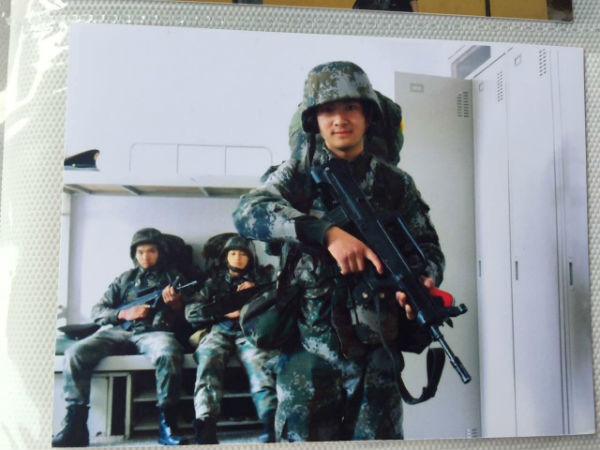
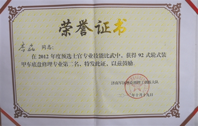

中国驻南苏丹维和部队遇袭 牺牲的步兵营下士系蒲江人--李磊
今日，国防部新闻局官方微博发布消息：7月10日，南苏丹政府军与反政府军继续在首都朱巴交火。中国维和步兵营执勤分队遭袭。炮弹击中步战车，在内部爆炸。下士李磊头部胸部重伤，抢救无效牺牲。当地7月11日9点24分，遇袭事件中受伤的四级军士长杨树朋抢救无效牺牲。
3天前22岁生日 和母亲越洋电话竟成诀别
母亲杨彬最后一次听到儿子的声音，是在3天前儿子生日那天打来的越洋电话。但没说上几句，就挂了。
噩耗突降，惊得杨彬一下子瘫坐在沙发上一动不动。流了一下午的眼泪，已经让她发不出声音。
但说起最后一次听到儿子的声音，她难掩悲痛，哽咽着说，就在3天前儿子生日那天，她接到了儿子的越洋电话。“妈，你在干什么呢？”杨彬回忆说，当时她在别人家帮忙做酒席，周围很吵闹，儿子也听不大清她说话，没说几句就挂了。不想，这却是母子最后的对话。
为供养妹妹，还没考虑女朋友
在李磊家，四面没粉刷的墙壁已发黄，灰褐色的水泥地上除了一张陈旧的桌子什么也没有。房子的角落里零零散散地堆放着几个布娃娃以及一些儿童的小玩具。里屋的沙发上，也随处摆放着小孩子的衣物。
“李磊爸爸去世后，妈妈过几年再婚了，生了妹妹。李磊很理解妈妈的做法，是我们这里出了名的孝顺娃娃。”旁边一位40多岁的王女士跟记者说。
这位王女士的背后是李磊家的厨房，还是上世纪80年代老式的土灶，灶台上锅和盆的锈迹清晰可见。
“那是李磊妹妹的，快满2岁了。”旁边一位40来岁的李女士介绍说，“李磊最喜欢他的妹妹了，虽然是母亲再婚后生的孩子，但李磊一回家就抱着妹妹，喜爱得不得了。”
大表姐范维忍不住说，“李磊不止一次地跟我说过，他现在暂时没有考虑过自己的个人问题，家里负担这么重，他打算先挣钱养家。他想减轻妈妈的负担，自己挣钱供养妹妹。”